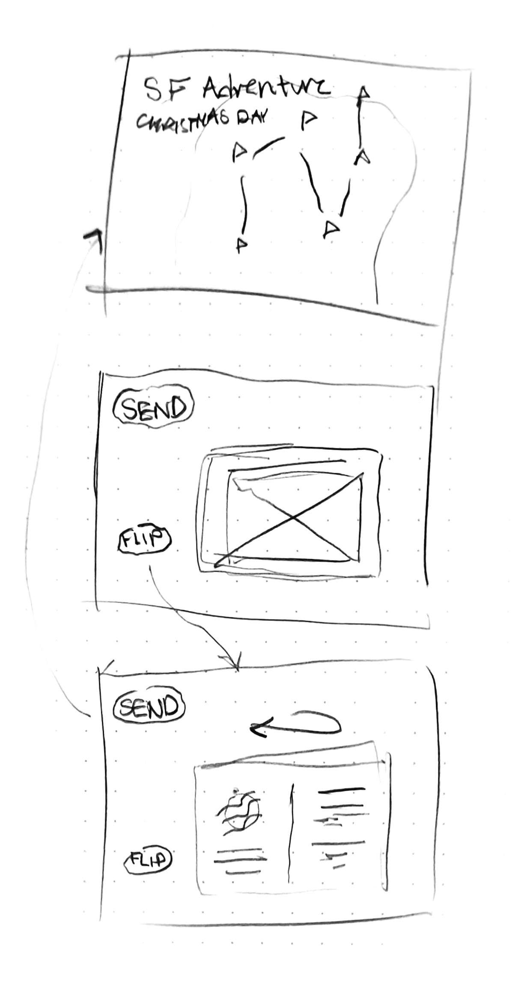

Conceptual Changes
More ideas are formed in making the images like postcards. The postcards would appear after clicking a flag on the map, and they can be flipped around to view text like a real postcard. More Christmas imagery can be used in the design to make it feel more like a Christmas adventure.